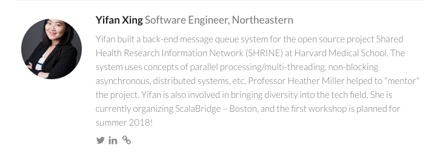
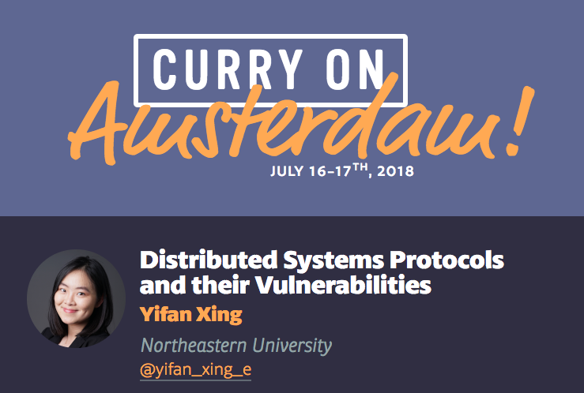

2 Talks I Gave
I love giving and listening to talks! :)
Speaker’s Bio:
Yifan is an open-source contributor, speaker, and ScalaBridge Boston organizer. Yifan built a back-end message queue system for the open source project Shared Health Research Information Network (SHRINE) at Harvard Medical School. The system uses concepts of parallel processing/multi-threading, non-blocking asynchronous, distributed systems, etc. Yifan is also involved in bringing diversity into the tech field. She is currently organizing ScalaBridge – Boston, and the first workshop is planned in August 2018! She is also a speaker and has given a talk at ReactSphere (Sphere.IT 2018 Poland) about asynchronous programming in Scala. She will also be speaking at LXScala, Scala by the Sea, CurryOn Conf, LambdAle, and Lambda World.
ReactSphere, SPHERE.IT, Krakow Poland
—
— -Asynchronous Programming: Scala.concurrent and Monix! What?— — -
Conference: ReactSphere
Sponsor: VirtusLab
Venue: The Opera of Kraków Lubicz 48 31-512 Kraków
ReactSphere is a conference focused on Reactive Programming and Reactive System Design.
It dives deep into the principles of building responsive distributed systems handling huge amounts of data with near-realtime performance. Microservice Architectures, Actors, Messaging Systems, methods for domain analysis, and more will be covered during lively talks.
—
— — — — — — — — — — — — — Talk Abstract:— — — — — — — — — — — — —
In the context of executing a task, a synchronous execution indicates that the program waits for the result of the first task before moving on to another task. In contrast, an asynchronous execution does not wait for the result of the first task and it starts executing another task immediately after the first task is executed. Both Futures & Promises and Monix are Scala libraries that allow users to efficiently perform asynchronous operations.
This talk will introduce Futures and Promises library in Scala.concurrent and Monix. We will walk through several examples that demonstrate how to use Futures and Promises and Monix. In addition, the talk compares and contrasts the similarities and differences between the two libraries. Furthermore, we will discuss some best practices in debugging asynchronous systems.
—
— — — — — — — — — — — — — Slides:— — — — — — — — — — — — — — — -
Slides can be found here!
—
— — — — — — — — — — — — — Video:— — — — — — — — — — — — — — — -
Video can be found here!
LX Scala, Lisbon Portugal
—
— -Asynchronous Programming: Scala.concurrent and Monix!— — -
Conference: LX Scala
Sponsor: e.near
ReactSphere is a conference focused on programming languages, Scala in particular.
LXScala has been oragnized for the past three years. For the third time, Lisbon will host Scala experts from across Europe to discuss the present and future trends around the programming language.
Lisbon, Portugal

—
— — — — — — — — — — — — — Slides:— — — — — — — — — — — — — — — -
Slides can be found here!
—
— — — — — — — — — — — — — Video:— — — — — — — — — — — — — — — -
TBA
Curry On Conf, Amsterdam
—
— -Distributed Systems Protocols and their Vulnerabilities— — -
Conference: CurryOn Conf
Colocated conferences include ECOOP and ISSTA. Venue: Movenpick Piet Heinkade 11, 1019 BR Amsterdam, Netherlands
CurryOn Conf is a conference focused on the intersection of emerging languages and emerging challenges in industry (e.g. big data or security), as well as new ideas and paradigms in software development.
Curry On also seeks to act as a conduit for ferrying understanding and ideas back and forth between industry and academic programming languages, software engineering, and systems research communities (amongst others).
Curry On is a rare event where academic minds responsible for concepts and tools now invaluable to everyday software development – like functional programming, or generics in Java – collide with the movers and shakers in industry that are building next-generation systems and developing software engineering practices central to our entire industry.
Curry On will be held in a different European city year-to-year, and it will always be co-located with one of the top academic conferences in programming languages. This year, it’s co-located with ECOOP.

—
— — — — — — — — — — — — — Talk Abstract:— — — — — — — — — — — — —
Many messaging systems that are widely used in the industry, e.g., Kafka, use centralized distributed systems services to achieve reliability and consensus between servers. Companies in the industry use the services; however, only a few of them understand the details of the protocols. This talk brings the principles used in academia to the industry by introducing the common distributed systems protocols implemented underneath the popular services. In addition, this talk will compare the differences between how the protocols are used in both academia and the industry. It provides details of how the protocols, specifically Paxos and Raft, work, including how they elect leaders among servers, how they achieve consensus between machines, and how they reliability process and execute client commands. Therefore, it shows how the systems and services, which use the protocols, are enabled to have fault-tolerance, and to achieve confidentiality, integrity, authenticity, availability, etc. From the reliability and security point of view, the talk discusses how the protocols deal with machine failures, including leader failures and replicas failures. It shows the vulnerabilities and potential security issues exist in the protocols. Last but not least, we’ll take a look at what we can do to avoid the vulnerabilities when applying the academic theories in the industry.
—
— — — — — — — — — — — — — Slides:— — — — — — — — — — — — — — — -
Slides can be found here!
—
— — — — — — — — — — — — — Video:— — — — — — — — — — — — — — — -
Video can be found here!